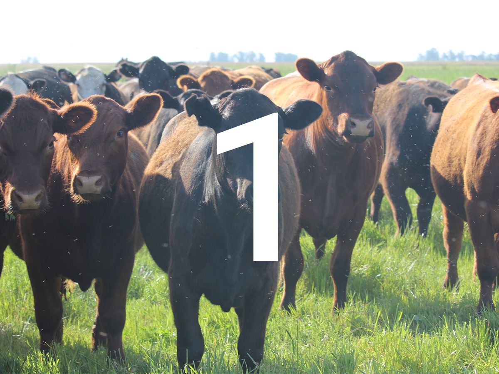

En la actualidad administramos campos en diferentes zonas:

Venado Tuerto
Campo de altísimo potencial donde hacemos agricultura permanente en rotación. Los rindes promedios de los últimos años superan en maíz los 110qq, soja de 1era 50qq, soja de 2da 37qq y los cultivos de invierno los 55qq.
Rojas
Campo dividido en tercios, maíz, soja y siembra de fina. Resultados similares a Venado Tuerto, pero en suelos más pesados.
Buchardo
Campo de altísimo potencial para cultivos de verano. También se alterna la producción e maní. La fina es un poco más errática y de un potencial medio.